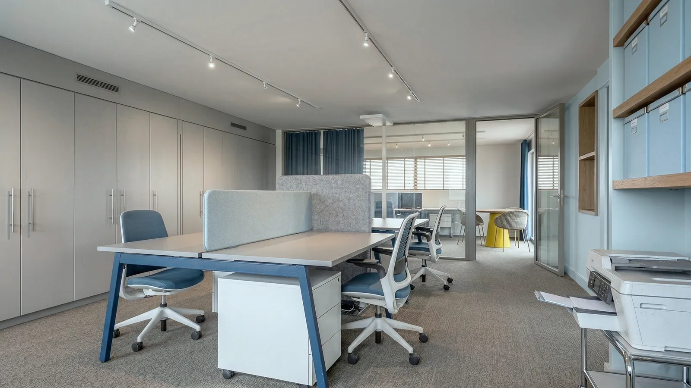

Bureaux et espaces de travail
Vous restructurez vos locaux
En savoir plus
Les bureaux doivent être pensés comme un véritable outil de performance.
Je réorganise vos espaces pour soutenir l'image et le développement de votre activité : circulations, postes de travail, salles de réunion, identité du lieu.